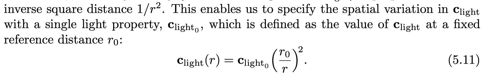
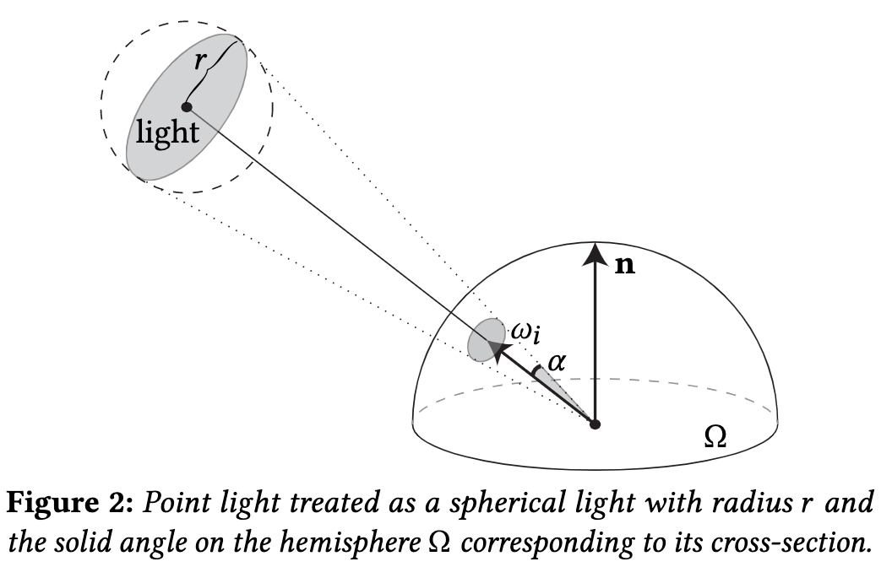
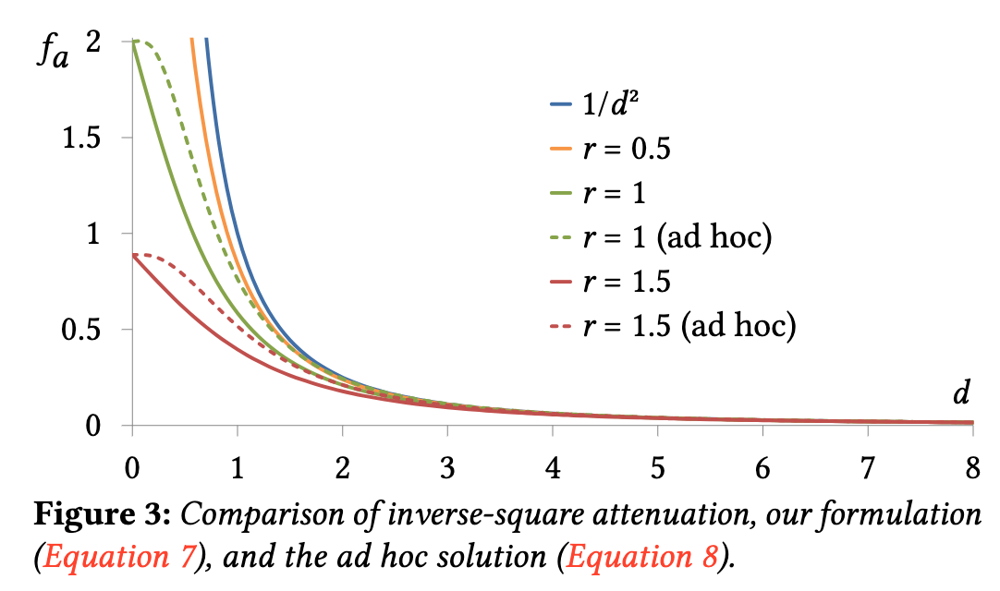
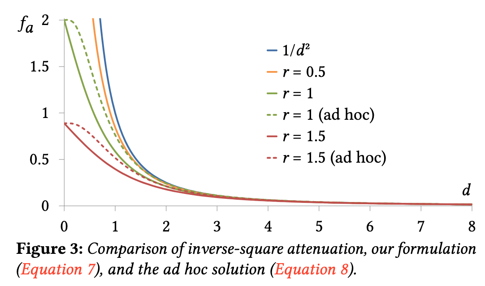
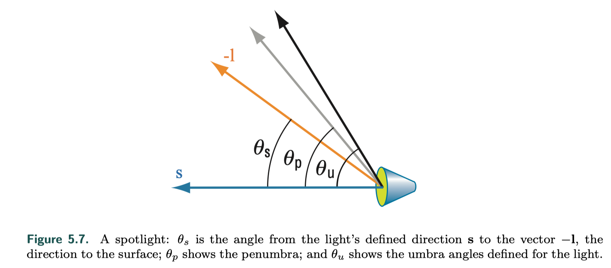

Punctual Light
守时的光源？？
最开始看到punctual light的时候查了下字典，punctual是守时的精确的，再带进去实在是很费解。然后看了RTR这本书的对应章节才明白： We use the term “punctual,” from the Latin punctus meaning “point,” for the class consisting of all sources of illumination that originate from a single, local position.
light direction
{kind=link}
Point/Omni Light
attenuation
其实主要是想看看这个衰减函数的，因为上周在分享一篇关于点光衰减函数的时候会发现在到光源距离r无限小的时候，光强会趋于无穷大，就会有点费解，那点光的intensity的定义究竟是什么，然后在书里找到了答案：  点光的衰减函数就是距离平方的倒数，通常我们定义的点光的intensity实际是在某个给定距离下的intensity. 这样一说就觉得比较合理了。
{kind=link}
singularity problem
距离平方的倒数的衰减函数就会面临一个除0的问题，以下会有一些解决办法：
- 分母加上一个很小的数 UE 的DeferredLightingCommon.ush里实现是取的1 cm.
- 距离做截断 CryEngine and Frostbite 是这么做的，it has a physical interpretation: the radius of the physical object emitting the light, 这里考虑了光源的物理半径。
- siggraph 2020 talk
http://www.cemyuksel.com/research/pointlightattenuation/

作者把点光近似为一个spherical disk light, 把距离的attenuation转换成立体角的大小。
 在距离比较小的时候对inverse squared有更好的近似。

在距离比较小的时候对inverse squared有更好的近似。

{kind=link}
{kind=link}
{kind=link}
{kind=link}
{kind=link}
{kind=link}
self-defined attenuation function
对于有些场景，拟合inverse-square curve没有那么必要，就可以根据需要定义自己的衰减函数：
{kind=link}
large distances calculation
距离比较远了之后，点光衰减的很多几乎接近于0，从性能上考虑，这部分计算性价比就不高了。
{kind=link}
{kind=link}
Spot Light
spot light相比点光还多了一个方向上的衰减函数。  Frosbite 中使用的函数
{kind=link}
{kind=link}
{kind=link}
Others
- IES profiles
- falloff functions for distance along the x, y, and z world axes
- vary light intensity over time